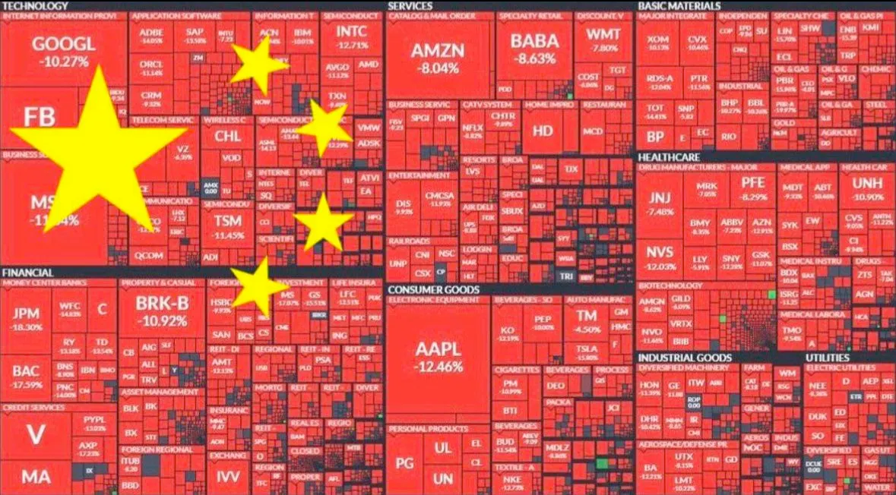
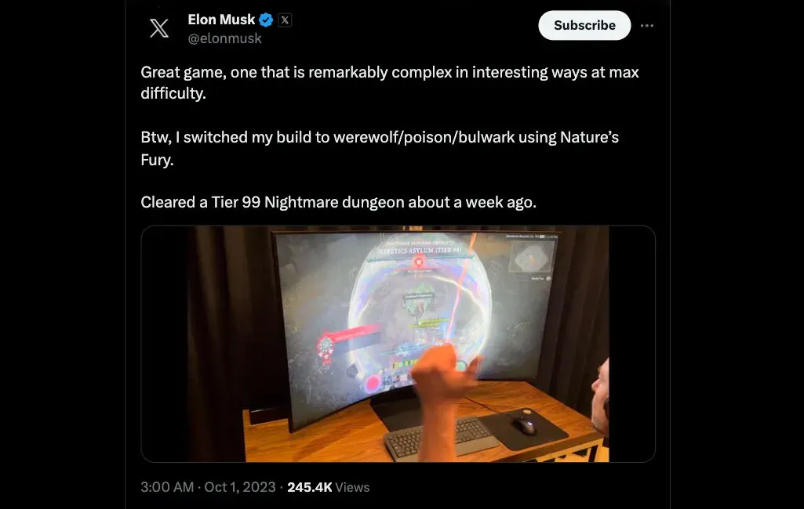
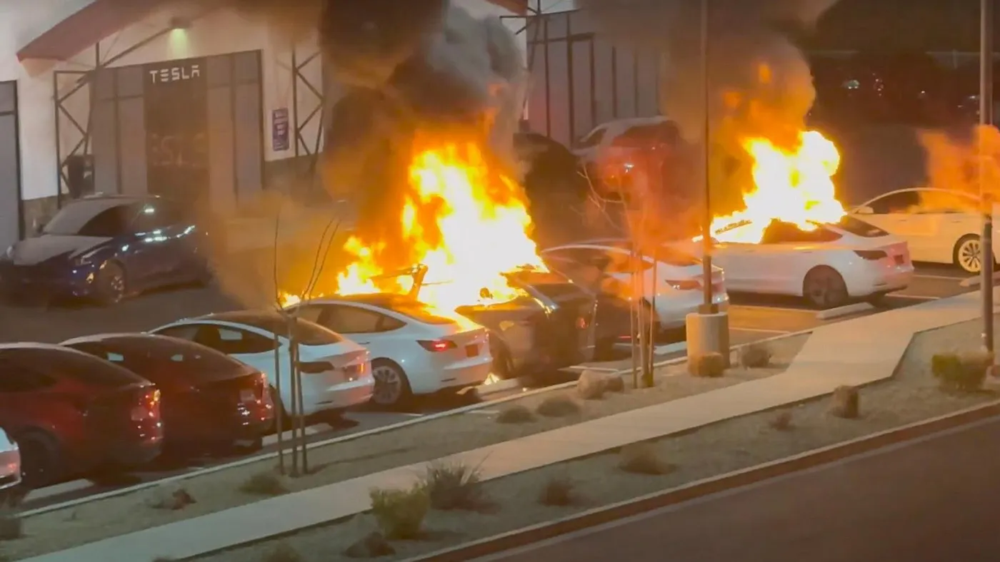
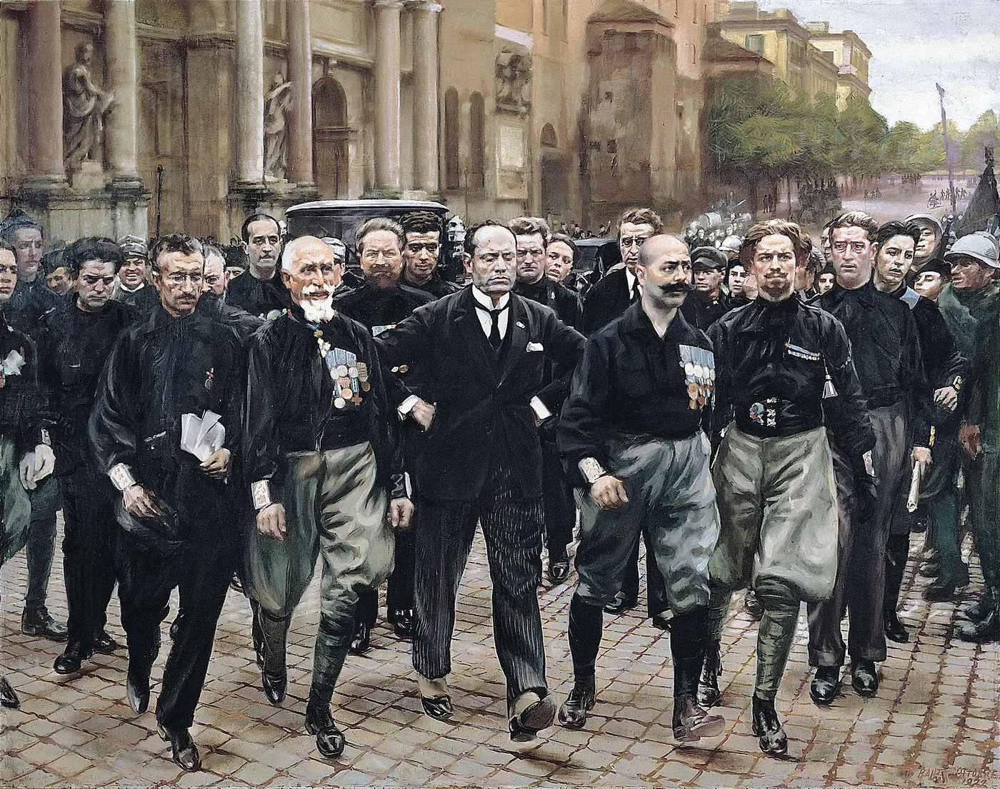
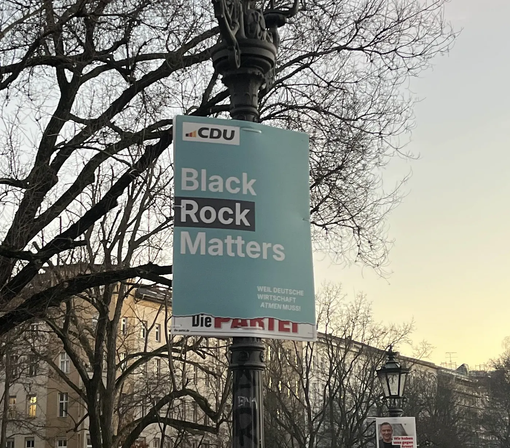
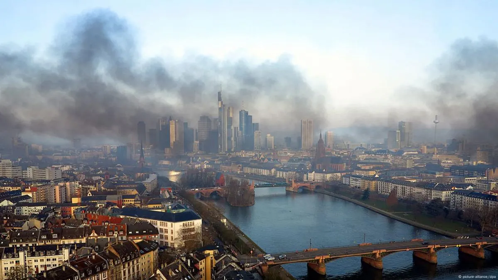
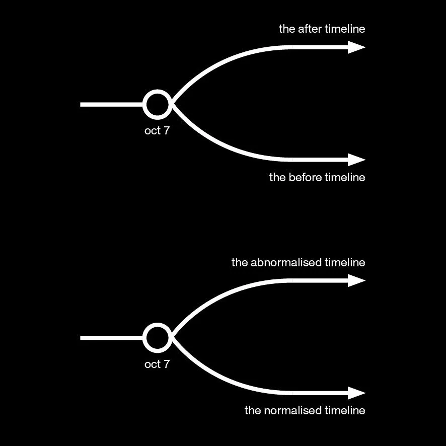
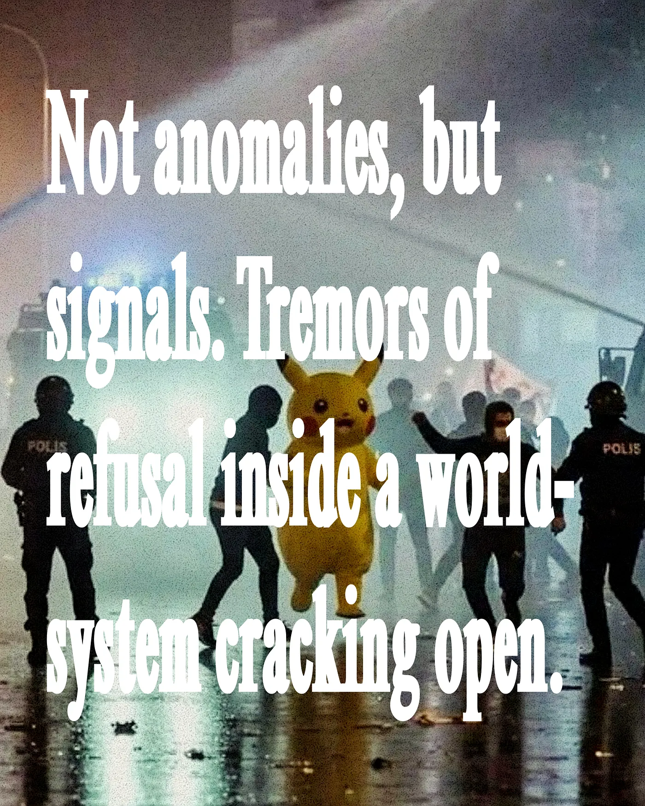
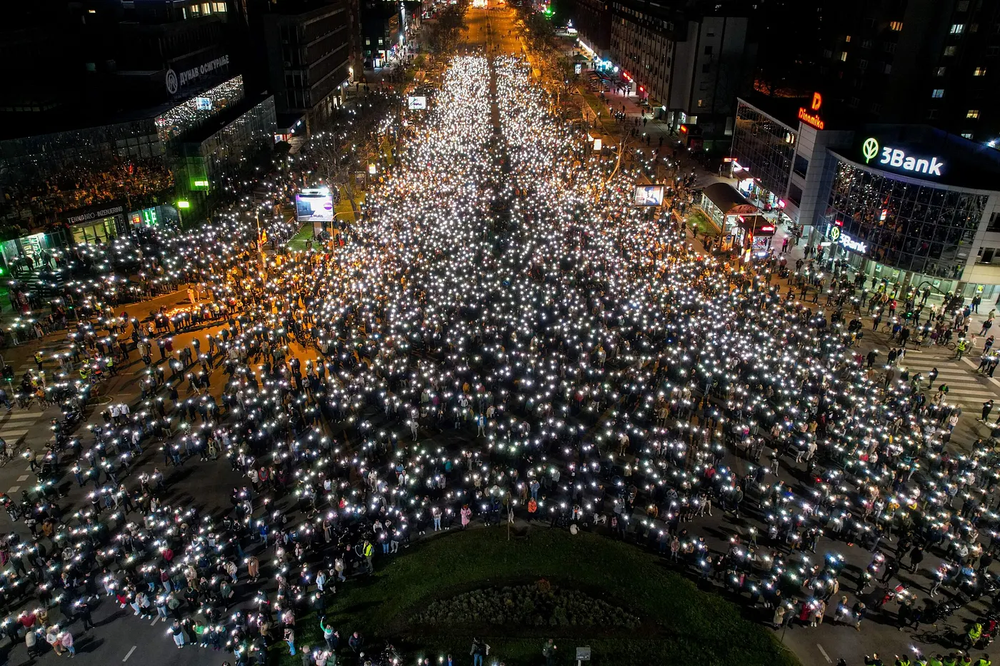

Drop #30 · April 4, 2025 · 15 min read
Hey everyone (▰˘◡˘▰)
Welcome back to DROPS, REINCANTAMENTO’s newsletter.
Drop #30 features an analysis of our current global conjuncture. Through a series of vignettes: burning Teslas, China's technological rise, Trump's "muzzle velocity" governance, and Europe's pivot to militarism - Alessandro maps the turbulent shifts reshaping power today. As bodies caught in the world-system's contractions, we need new cognitive cartographies to navigate these disorienting waters. Note: this article was written before the so-called Liberation Day.
Introduction
The world-system is evolving rapidly. As bodies caught within its violent contractions, we try to find footing on shifting ground. The Leninist refrain “There are decades where nothing happens; and there are weeks where decades happen” captures the disorienting turbulence of 2025 thus far. What you’re about to read is my attempt at tracing a cognitive cartography: a map to render legible the complex interplay of events, affects, and perceptions that characterize this historical moment. I’m inspired by the notion of conjunctural analysis, an approach belonging to the Marxist analysis toolbox, that offers some inspiration and orientation. As described by art historian Claire Bishop:
“Conjunctural analysis […] seeks to articulate the present-day reality in greater complexity, and to identify a contradictory system at work. There are many forces, not just one singular logic unfolding through history, and many political actors, not just the proletariat as agents of change. A conjunctural analysis is also forward-looking: whenever political theorists speak of conjunctural analysis, they agree that what lies at stake is finding a path to 'intervention'.”
My act of observation, starting from personal field notes, also has a performative character: as a practice of meaning-making, it aims to offer a therapeutic response to a conjunctural vertigo, attempting to offer a vessel to navigate the turbulent waters of the present. This process has provided me with a degree of clarity; I hope that it might offer similar illumination to you.
iShowSpeed in Beijing
To begin, a series of vignettes from the last 90 days.
It's January 20th. I'm scrolling through my Twitter/X feed—we're locked in, despite everything—and I notice a new icon appearing in every other tweet: a whale. The whale is the logo of DeepSeek R1, a new Large Language Model released by a Chinese company of the same name. It comes from Hangzhou, a city on the Chinese coast once described by Marco Polo as "the finest and most splendid city in the world," now home to both Alibaba's headquarters and China's flourishing AI ecosystem, and is the first serious competitor to US-American hegemony in the AI field.

It was precisely this anxiety regarding China's technological ascendancy that prompted Silicon Valley's elite to pledge allegiance to Trump's restored administration just days before DeepSeek's launch. This strategic realignment of tech interests with MAGA ideology signals a fundamental shift: globalization has reached its terminus, even for transnational capital itself.
The free market, guided by large investment groups (e.g., BlackRock, Vanguard, State Street, Fidelity), no longer ensures the continuation of US-American hegemony, and US-made capitalists yield to Trumpian protectionism in the hope of maintaining their dominance.
Mark Andreessen, the venture capitalist and Trump’s advisor, calls DeepSeek “the 21st century's Sputnik moment”: a technological inflection point reminiscent of 1957, when Soviet aerospace achievement signaled Soviet Union’s relative superiority in the field. Yet China's position fundamentally differs from the URSS’ one.
China's economic overtaking of the United States manifests not as potential but as a present reality, particularly visible in the electric vehicle sector. The Chinese manufacturer BYD now dominates global EV markets, with domestic competitors Wuling and Li Auto claiming the third and fifth positions in worldwide sales rankings. Against this coordinated industrial advance stands a singular Western competitor: Tesla.
Remember: Elon Musk is both an idiotic, narcissistic, fame-seeker, and a business captain calibrating his strategic position. He appears motivated to risk significant accumulated capital and social legitimacy in the service of preserving market dominance, a calculus that transcends ideological alignment. But sometimes the medicine is worse than the disease, as we shall see.
DeepSeek, BYD, but also TikTok. If DeepSeek is this century’s Sputnik, it is also part of a longer arc, what Giovanni Arrighi called a hegemonic transition. The U.S. moves from productive to financial dominance, while China builds its counter-hegemonic infrastructure not through war but through chips, cables, and clean vehicles. The story of TikTok and its ban constitutes even a doubled Sputnik moment, if I may. Firstly, a social platform made in China becomes a leader in the attention economy, revolutionizing content creation. Second, through the paradoxical consequence of attempted US regulation, an unprecedented migration of Western users takes place towards another Chinese platform, Red Notes. The containment strategy inverted into its opposite, and a digital exodus beyond the Great Firewall took place.
The latest to jump over the Great Firewall is none other than iShowSpeed, the most famous Twitch streamer in the world. A young man from Cincinnati, Ohio, iShowSpeed visited China in March and streamed to his millions of followers his wonder at Chinese urban landscapes and technologies.
A vignette from his Twitch streaming: a viral clip captures iShowSpeed's amazement at a Xiaomi SUV7 Ultra: a $70,000 vehicle delivering 1,526 horsepower and 1.92-second acceleration to 60mph, performance metrics that would command double the price in Western luxury marques. In the comments, his fans show astonishment at Xiaomi's automotive materialization. iShowSpeed disintegrates decades of anti-Chinese propaganda and offers a global stage for Chinese society to be admired globally. The tide is changing.
In fact, while Chinese vehicles are leading the market and breaking into the mainstream, cars made in the US are facing a different fate. There are burning Teslas in this vignette - their distinctive T-badges liquefying in conflagrations across the world: Las Vegas, Berlin, Rome, Toulouse, Calgary, and throughout the United States. In 2025, a burning Tesla is a political act: a rejection of the new stars-and-stripes fascism.
Benito Mussolini once stated: “Fascism should more appropriately be called Corporatism because it is a merger of state and corporate power”. The merge is crystallized in the next vignette. We are on the White House South Grounds, where Donald Trump gestures towapresidential symbolic authority unleashed to counterrd a crimson Model S ($80,000): "The one I like is that one. And I want that same color". The presidential residence transformed into an automotive showroom. The shining, red Tesla in the White House’s courtyard is an answer to the burning Teslas: presidential symbolic authority unleashed to counter the pyro-sabotage of Elon Musk’s companies.
The performance is necessary: Musk, now with Trump’s help, must always pump his stock’s values acting as the real *hype-man* of his wealth empire. The attack against Tesla terrifies him: the car company’s financial stocks are where most of his wealth resides and he can't sustain a long-term boycott of it without having to admit his own dependency.
A vignette to capture this spirit: Musk is livestreaming Path of Exile 2 on X, claiming mastery at the "highest level" in the game. But the more he plays live, the more his fundamental ignorance of basic game mechanics is revealed. Gaming experts dissect the stream, concluding what seems obvious: someone else has built these characters, which Musk commandeers for performative authenticity. This pathological need to be perceived as exceptional—whether in gaming, business, or politics—reveals the desperate compensation driving his alliance with Trump. While his estranged daughter Vivian calls him a "pathetic man-child" performing Nazi salutes at Trump rallies, Musk continues his multi-platform performance: the businessman-gamer-political kingmaker desperate to project strength while his legitimacy literally melts away in parking lots across the world.

But Musk is not alone, nor he is the most important character. Trump is allowing a faction of US capitalism - Musk, Peter Thiel, the so-called Paypal Mafia, the Bitcoiners, etc. - to access the federal offices directly. MAGA follows Mussolini’s playbook. Scared and terrified to lose American supremacy against China, they are gambling on a quick, as efficient as possible, autocratic revolution to forge violently the new Federal State allegedly readier for the geopolitical competition of the XXI century.

This strategic approach was illuminated in a February 2025 New York Times piece by Ezra Klein, who resurfaced a revealing 2019 interview with Steve Bannon. In this exchange, Bannon articulated his *accelerationist* approach in clear terms:
> Steve Bannon: The opposition party is the media. And the media can only, because they're dumb and they're lazy, they can only focus on one thing at a time.
All we have to do is flood the zone. Every day we hit them with three things. They'll bite on one, and we'll get all of our stuff done. Bang, bang, bang. These guys will never, will never be able to recover. But we've got to start with muzzle velocity. So it's got to start, and it's got to hammer, and it's got to > Michael Kirk: What was the word?> Bannon: Muzzle velocity.
Bannon’s muzzle velocity is the most recent articulation of the fascist passion for speed and acceleration, passionately debunked by the British philosopher Benjamin Noys in Malign Velocities. Here emerges the eerie similarity between Italian Fascism and its fascination for Futurism and MAGA's recent passion for Big Tech. Throughout these weeks, I’ve been watching the TV show "M - The Son of the Century", a great portrayal of Italy's authoritarian transition in the 1920s.
In a pivotal scene from the fourth episode, Mussolini, interpreted by a great Luca Marinelli, reflects on the infamous "March on Rome”:
"Certainly it is suicide. The army will tear us to pieces... it's a ridiculous plan, you know it. With the command cut off, garrisons concentrated hours and hours of walking away from Rome. To whom the victory? To whom the victory? And I am against suicide. They don't know it—it's all pretense. March, rise up? What are we, crazy? To Rome? Pretend, pretend to be ready to march, pretend to rise up. It's all performance that, to be credible, needs a certain... reality. And so, movement, lots of movement, going here and there, spreading the word: 'They're gathering, they're marching, they're rising up.' Oh God. Give them more. Give them everything they want."
The OG muzzle velocity. The cultivation of chaos as a governance strategy. A performative insurrection overwhelms institutional response mechanisms and creates fertile conditions for a despotic consolidation. The seismic restructuring of America's institutional architecture sends waves all over the globe. The hegemonic power becomes the rogue state.

Sometimes, Trump’s historical trajectory reminds me more of Gorbachev’s rather than Mussolini’s. An impossible reform doomed to fail. As I complete this piece, the Trump administration extended its assault on the global trade system, promising tariffs against enemies and friends alike. Muzzle velocity. Or in tech parlance: “move fast and break things”. But can calcified systems withstand such shock therapies without fundamental rupture?
The Day that Ended Austerity
Series that intersect: the series of the US authoritarian revolution meets the breakthrough of the Chinese empire into the Western mainstream. Both meet and how could it be otherwise, the European convulsion and the attempts at movement in the Old Continent. Attempts that agitate in opposite directions.
A vignette from Berlin: an election poster for the German conservative party CDU hangs from a lamppost on Admiralbrücke, on a rare sunny day in early February. The poster, actually a parody by the satirical movement Die Partei, reads Black Rock Matters, mocking the connections between the world's largest investment fund and the future German Chancellor Friedrich Merz, head of the CDU party.

Friedrich Merz, a billionaire investment lawyer, served on over 15 corporate boards, including as BlackRock Germany's chairman, earning millions in consulting fees. Moreover, his close relationships with chemical and metallurgical industries—top CDU donors—raise conflict of interest concerns. Despite these ambiguous ties, Merz won the German election at the end of February and prepares to become the next German Chancellor, and his early, rapid moves are setting the future European landscape.
In the next vignette, I’m on a Deutsche Bahn train moving between Amsterdam and Berlin, obsessively reading economist Alessandro Volpi's latest analysis, which excavates the structural logic beneath Merz's financial choreography.
What happened? Three days prior, on the 18th of March, the Bundestag, with the pre-election composition, secures Merz the parliamentary approval for a massive fiscal spending package dubbed a financial "bazooka.". The plan exempts defense spending above 1% of GDP from Germany's strict debt rules and creates a €500 billion fund for infrastructure investments over 12 years. The German social democrats, this time alongside the Greens, voted once again for warfare credits, as they did in 1914. Germany, caught in a proper polycrisis after the War in Ukraine, decides to ignore for once the ordoliberal moral economy that imposes not making debt to fund its re-armament against Putin's Russia and in light of the US's new chaotic alignment.
The devil is in the details, and the irony of history is hidden in dates. I’m texting my friend N. about the news coming from the Bundestag when he shares a picture of exactly ten years ago. It depicts Frankfurt from above, showing the European Central Bank headquarters shrouded in smoke on March 18, 2015. The image captures the culmination of the "Blockupy" protests when tens of thousands converged on Frankfurt to contest the ECB's inauguration of its gleaming new tower—a €1.3 billion architectural monument to financial power rising amid the ashes of austerity-ravaged Southern Europe. That day, the Blockupy alliance—a network of anti-capitalist organizations including Attac, Die Linke, and various European left movements—transformed Frankfurt's streets into a theater of resistance.

Blockupy militants, including my friend N., were fighting the German model of austerity, which moralized about fiscal rectitude, that demanded Greece (and to a minor extent Italy, Spain, and Portugal) to sell its ports, airports, and islands to service unpayable debts, that has halted public investments on their own infrastructure and social support.
Now, after a decade, the same German state suspends its sacred debt brake. The Welfare State mutates into a Warfare State in what seems to be a smooth rebranding operation. Synchronously, the EU Commission, led by the weak leadership of Ursula von Der Leyen, unleashes the re-arm plan as its main priority. In ten days, a collective psy-op is launched against the European population to convince them that a war is imminent, and this justifies every other budget cut.
Although it is strategically sensible to talk about European military independence, the claims that Putin, the same Putin that has been stuck in Donbas for the past 11 years, could invade and conquer European territory tomorrow are second-tier propaganda. However, the propaganda pace left me confused for some days, and only on that train going back to Berlin, I found what appeared to be a lucid reading of the events.
In Volpi's analysis, which he shared through his Facebook page and on the leftist and (extremely) populist channel OttolinaTV, the German fiscal policy shift—this "trillion-euro injection" facilitated through constitutional reforms—performs three distinct yet interconnected functions within the evolving logic of the present conjuncture.
First, it engineers a privileged destination for capital fleeing increasingly protectionist and unpredictable US markets. The economic repercussions of Trump's authoritarian reorientation are already visible: The Washington Post reported, for instance, the predictions by the Treasury Department of a loss of tax revenues by 10% following DOGE Service’s interventions. The capitalist class is aware of the fleeting situation of the US and is divesting: for instance, Warren Buffett's Berkshire Hathaway has divested over $140 billion in US equities, while Jeff Bezos sold approximately $12 billion of Amazon stock. They now need new venues for investments, and the German re-armament could become the new financial bubble.
Second, more financial loops: Volpi identifies a self-reinforcing cycle wherein government bonds (enabled by the suspension of debt limitations) are purchased by the same financial entities—BlackRock, Vanguard, and State Street being the primary players—that simultaneously acquire significant positions in defense industry stocks. This creates what Volpi describes as a "circular metabolism of financialized militarism" where public debt effectively subsidizes private accumulation under the guise of national security imperatives.
Third, this policy initiates a fundamental restructuring of German industrial production priorities, pivoting from civilian consumer goods toward military hardware and associated technologies. If the car market is more and more Chinese, as iShowSpeed realized, German factories will produce tanks and drones.
Blackrock lives matter, right? The new German, financialized militarism seems to be a *Germany-first* policy that will leverage its economic superiority to become a military power. What this will mean for the rest of Europe remains unclear. If Germany grows again, the same can’t be said of other countries, like Italy, and the eurozone growth projection is merely 0.9% in 2025, increasing only to 1.3% by 2027.
This new economic plan will likely increase the inequalities in the EU and deepen the authoritarian approach at home. Merz’s Germany announced an unprecedented attempt at deporting Western citizens due to their participation in the movement for Palestinian freedom. Just a couple of days earlier, Trump’s ICE did the same on the streets and in universities.

The genocide, backed by Western powers standing firmly with Netanyahu, doesn't merely exist alongside the other phenomena we've observed; it fundamentally distorts the gravitational field in which we all operate. The true inflection point is Gaza: everything that is taking place exists in a world where genocide is supported. Such a horror can’t help but consume the West from within. Violence is the rule, and deportations of activists, criminalization of solidarity, and academic purges are the new norm.

But mere outrage is not a luxury we can afford. The conjuncture forces us to look beyond the direness of the present, to diverge from the fixation on the imperial core. To look, for instance, at a final set of vignettes. In Istanbul, a protester in a Pikachu costume ran away from tear gas, in the greatest protest against Erdogan in half a decade. In Athens, the streets flooded again against the arrogance of power. In Jakarta, where young generations are fighting the return of militarism. Finally, in Belgrade, where the streets are crowded by the biggest student movement on the European continent since 1968.
Not anomalies, but signals. Tremors of refusal inside a world-system cracking open.
